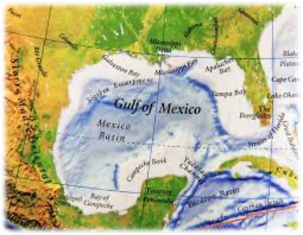

TrackOcean – L'innovation aux service des océans

Cette plateforme interactive permet de suivre en temps réel la position et le comportement des navires grâce aux données AIS (Automatic Identification System) dans le golfe du Mexique. En combinant géolocalisation, vitesse, direction et caractéristiques des navires, l’outil propose une visualisation claire des trajectoires maritimes, une classification automatique des comportements, ainsi que des prédictions avancées. L’objectif est d’offrir une interface simple et intuitive pour explorer les mouvements maritimes et mieux comprendre les dynamiques de navigation.